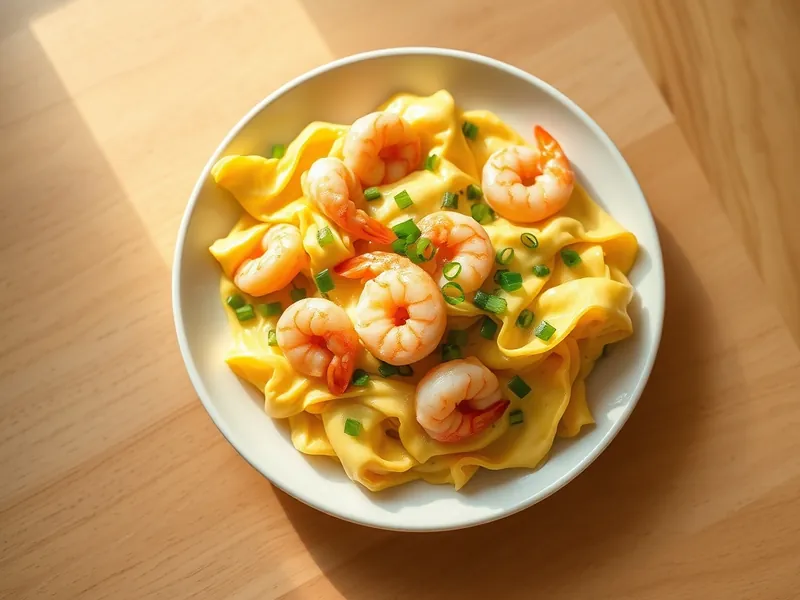

Креветки с яйцом по-китайски
Сочные креветки в мягкой кремовой яичной болтунье с зелёным луком
15 мин2 порц.368 ккал на порциюБ 33 · Ж 25 · У 3Азиатская кухня
Открыть в приложении: порции, таймеры, список покупок
Продукты на 2 порц.
- Креветки200 г
- Яйцо куриное4 шт
- Крахмал1 ч. л.
- Зелёный лук0,5 пучка
- Растительное масло2 ст. л.
- Соль0,5 ч. л.
- Перец чёрный молотыйпо вкусу
- Кунжутное масло по желанию0,5 ч. л.
Как готовить
- Обсушите очищенные креветки салфеткой, перемешайте со щепоткой соли и крахмалом и оставьте на 5 минут.
- Разогрейте половину масла на сильном огне и обжарьте креветки 1-2 минуты, пока они не порозовеют и не свернутся. Переложите в миску.
- Взбейте яйца с солью, перцем и кунжутным маслом, добавьте креветки и половину зелёного лука.
- Влейте в сковороду остальное масло, убавьте огонь до среднего и вылейте смесь.
- Медленно сдвигайте яйца лопаткой от краёв к центру 1-2 минуты, пока они не схватятся крупными мягкими складками, и сразу снимите с огня. Посыпьте оставшимся луком.
Совет. Снимайте с огня, пока яйца ещё блестят и выглядят слегка недожаренными - на тарелке они дойдут сами.